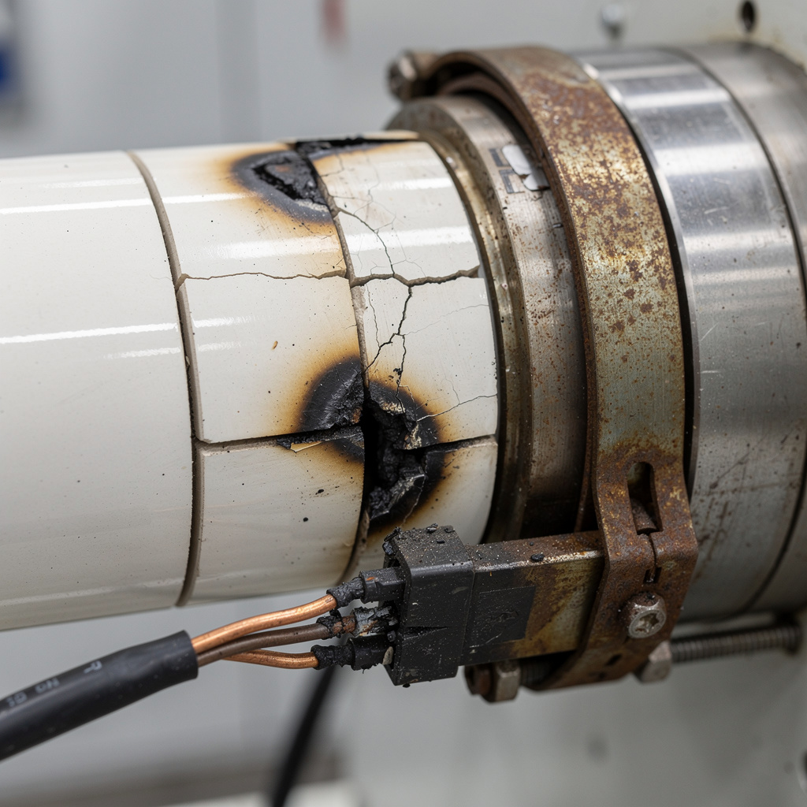
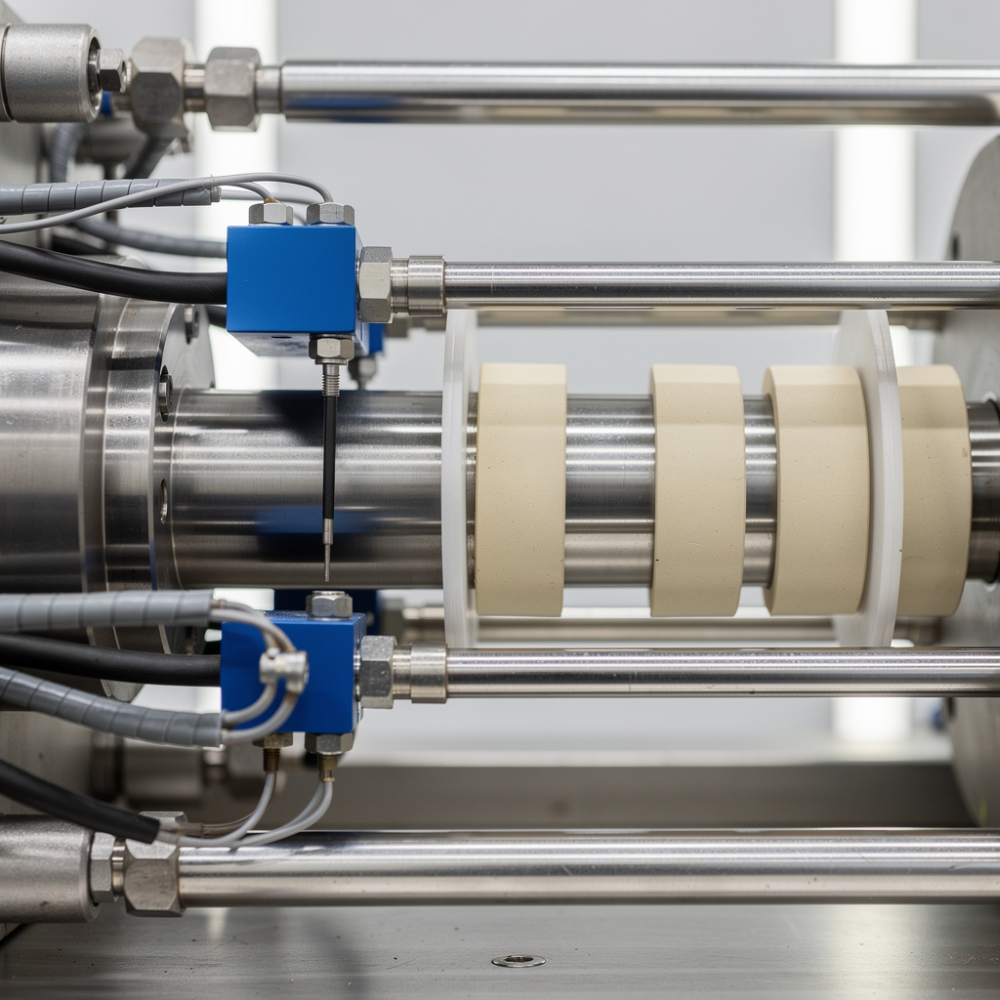

Panne collier chauffage — Presse injection Engel 280T
// Le Problème
Contexte : Production continue de pièces techniques PA66+GF30 pour automotive. Cycle nominal 28 s, 250 pièces/heure. Pression 1400 bar, température cylindre 280–300 °C.
Symptôme : Alarme 'ZONE 2 TEMP LOW' sur écran presse Engel. Température zone 2 chute de 290 °C à 185 °C en 8 min. Couple vis dépasse 85 % nominal → sécurité couple déclenche l'arrêt. Matière semi-fondue bourre la vis/cylindre. Production arrêtée, 45 pièces en rebuts.
// Diagnostic
Électrique : mesure résistance collier chauffage zone 2 (centre cylindre) = circuit ouvert (∞ Ω). Valeur nominale 88 Ω (600 W / 230 V). Collier céramique fissuré sur 120° de circonférence. Jonction câble/collier carbonisée (sur isolation PVC standard au lieu de silicone haute température).
Thermique : rupture collier zone 2 crée un gradient thermique : zone 1 (amont) 295 °C, zone 2 (centre) 185 °C, zone 3 (tête) 300 °C. PA66 non suffisamment fondu → vis force sur matière solide → couple anormal → arrêt sécurité.
Historique : collier zone 2 jamais remplacé depuis mise en service (4 ans). Durée de vie nominale céramique industrielle : 2–3 ans en continu à 300 °C.



// Solution apportée
// Résultat mesuré
Production redémarrée après 3 h 30. Zéro rebut depuis le redémarrage sur 4 h de production (vs 45 pièces rebutées pendant la panne). Température zone 2 stabilisée ± 2 °C autour de 290 °C. Temps cycle nominal 28 s rétabli. Économie vs appel constructeur Engel estimée à 4 800 € (déplacement + main d'œuvre spécialisée + majoration urgence).